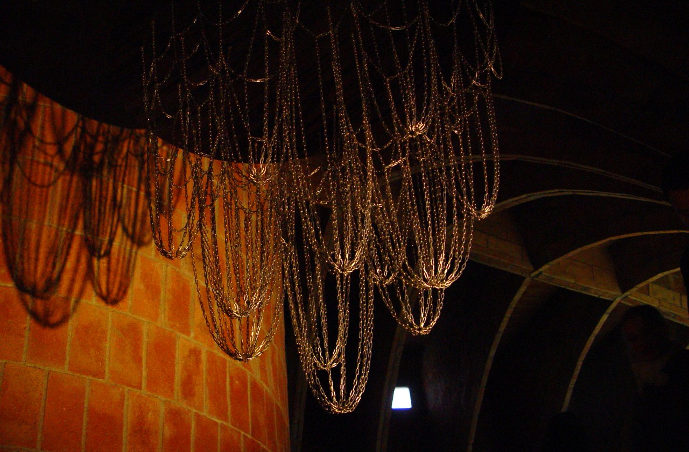

Cult Classics · CC.02 · Architecture, Craft & Stereotomy · 22 min read
One Stone Forest, Eight Moves
Five generations across 144 years of the Sagrada Família (1882–2026), told one structural and human move at a time.
How does one human workshop carry an unfinished vision across 144 years of war, fire, lost drawings, depleted quarries, and changing materials? By replacing private whim with open geometric law—so builders separated by a century can still pick up each other’s straight lines.

On February 20, 2026, cranes high above Barcelona’s Eixample set the final 4.5 m × 4.5 m × 4.9 m upper arm onto a 17 m ceramic-and-glass cross atop the Tower of Jesus Christ, completing its exterior silhouette at 172.5 m ahead of the June 10, 2026 centenary inauguration—one hundred years to the day after Antoni Gaudí died, roughly 5.2 m below Montjuïc hill (177.7 m).
Basílica history Basílica 2026 cross Basílica 2026 inauguration
The real wonder of those 144 years is human continuity. Gaudí grew up learning sheet-metal geometry at eight years old in his coppersmith father’s workshop in Reus, studied the tree outside his Barcelona studio window, and left behind a grammar of hanging chains and straight-line quadrics. Five generations of disciples, plasterers, stonecutters, stained-glass masters, acousticians, and structural engineers kept reading that shared grammar across century-wide gaps—turning math into a bridge between people who missed each other in time.
Five Generations · 1882–2026+ Human Continuity Observatory
How Five Generations Carried One Work Across 144 Years
Seldom in human history do grandparents lay foundations knowing neither they nor their grandchildren will see the cross installed. Select each generation (1882–2026+) to trace who held the site, what historical break threatened to end it, and what geometric or structural gift they left for builders yet unborn.
First Generation · Antoni Gaudí & Craft Foundations
Crypt 0 m → St. Barnabas ~100 m- Who held the site
- Antoni Gaudí (taking over from Francisco de Paula del Villar in 1883), site blacksmiths, plasterers, carvers, and Domènec Sugrañes.
- Historical crucible
- Working within an already rising 1882 Neo-Gothic crypt plan while suffering childhood rheumatism and inventing an architecture free of external flying buttresses.
- Gift handed forward
- Replaced private sketches with 3D polyfunicular string models, ruled surfaces, the 1909 workers’ Schools, and the completed Saint Barnabas tower (1925) as a built physical key for successors.
Basílica history Basílica Gaudí bio Basílica humanism Adell & García Santos 2005

Second Generation · Guardians of the 1936 Shards
Workshop reconstruction → Passion foundations- Who held the site
- Domènec Sugrañes (head 1926–1936) and Francesc de Paula Quintana (site director from 1939), alongside surviving disciples and workshop plasterers.
- Historical crucible
- When the July 1936 Civil War fire destroyed drawings and photographs and smashed the 1:10 and 1:25 plaster models, public debate questioned whether the temple could continue.
- Gift handed forward
- Rescued the broken gypsum pieces from the ashes and painstakingly matched straight-line rulings and photos—showing how ruled geometry preserved the whole temple inside palm-sized fragments.
Third Generation · Passion Ribs & Ceramic Pinnacles
Passion towers 107.4–112.2 m · Vault prep- Who held the site
- Isidre Puig i Boada and Lluís Bonet i Garí (joint leaders from 1966), Francesc Cardoner (1983), and Catalan mosaic and stone artisans.
- Historical crucible
- Erecting the Passion facade towers (completed 1976) and museum documentation where traditional timber formwork struggled against double-curved junctions.
- Gift handed forward
- Built the taut bone-like Passion compression colonnade, founded the site museum in 1961 so visitors could study the engineering openly, and launched the nave foundations.
Fourth Generation · Aerospace CAD, Light & Sound
Nave vaults 45 m (Consecrated 2010)- Who held the site
- Head architect Jordi Bonet i Armengol (from 1985), parametric pioneer Mark Burry (from 1979), sculptors Josep Maria Subirachs & Etsuro Sotoo, stained-glass master Joan Vila-Grau, and Blancafort organ builders.
- Historical crucible
- Translating Gaudí’s second-order intersecting hyperboloids and double-twisted star columns cleanly enough to close the 45 m nave vaults for consecration in 2010.
- Gift handed forward
- Paired 5-axis diamond-wire stone cutting with Vila-Grau’s seasonal solar stained glass and the 1,492-pipe Blancafort organ—turning stone mathematics into light and music.
Basílica history Burry 1996 Gómez-Serrano 2009 Zhao & Burry 2024 Yoshikawa & Narita 2004
Fifth Generation · Tensioned Stone & Centenary Cross
Mary 138 m · Evangelists 135 m · Jesus Christ 172.5 m- Who held the site
- Head architect Jordi Faulí (from 2012), Arup engineer Tristram Carfrae, sculptor Xavier Medina-Campeny, European glass/ceramic workshops, and global stone quarries including Brinscall (UK).
- Historical crucible
- Raising six central lanterns up to 172.5 m above delicate 19th-century crypt foundations in a living city with high crane wind exposure.
- Gift handed forward
- Pre-compressed hollow stone panels off-site to cut weight dramatically, lighting the 138 m Virgin Mary star (2021), 135 m Evangelists (2023), and crowning the 172.5 m cross in 2026.
Basílica 2026 cross Basílica 2026 inauguration Basílica Evangelists Ingenia / Arup
Part I · Stone, Copper & Inverted Gravity
1882–1914
Every medieval cathedral fights a horizontal push where vaults lean outward on high stone walls. Gaudí refused external flying buttresses as structural crutches; shaped by metalwork geometry from his father’s forge in Reus and patient hours studying trees during childhood illness, he built upside-down string-and-shot models to watch gravity select compression lines.
Heyman 1966 Basílica Gaudí bio
On the Nativity facade and in the parallel 1:10 Colònia Güell hanging model (calibrated near 1:10,000 weight scale), tilting columns to follow the vector sum of vertical load V and horizontal thrust H kept loads centered in compression. Before his death in 1926, Saint Barnabas (1925) stood as a full-scale stone beacon for everyone coming next.
What hangs in pure tension stands in pure compression—giving builders without computers an analog physics engine in silk and shot.
1882 1882–1883
Inheriting a stone footprint with spatial eyes trained in metal
Diocesan architect Francisco de Paula del Villar laid the cornerstone on March 19, 1882, in classic Neo-Gothic style before technical disagreements led to his departure. When 31-year-old Antoni Gaudí took direction in 1883, the crypt piers were already rising—fixing a footprint he could not erase. Born in Reus in 1852, Gaudí had spent his boyhood cutting copper sheet into 3D vessels beside his smith father from 1860 onward, while bouts of rheumatism kept him observing plants and light at the family farmhouse rather than running with other children.
- First cornerstone laid
- 1882-03-19 (Bishop Urquinaona) Basílica history
- Gaudí takes over
- 1883 (age 31) Basílica Gaudí bio
- Early spatial craft
- Coppersmithing from 1860 Basílica Gaudí bio
- Guiding nature rule
- Workshop tree as teacher Basílica humanism
Sources consulted 2026-11-15

1884–1914 1884–1914
Letting gravity draw the structure upside down
On the Nativity facade and in his parallel 1:10 polyfunicular model (over 4 m tall) for Colònia Güell, Gaudí suspended silk cords weighed with lead-shot bags calibrated to ~1:10,000 of full structural load. Because a loose cord carries zero bending moment, flipping its reflection upward turns pure tension into compression arches—omitting external flying buttresses. Before Gaudí’s death in 1926, only one bell tower stood complete: Saint Barnabas (1925), leaving his disciples a full-scale built key for pinnacle mosaic and structural geometry.
- Funicular test scale
- 1:10 chords · ~1:10,000 weights Huerta 2006
- Governing curve
- y = a·cosh(x/a) (MODEL) Heyman 1966
- First completed spire
- Saint Barnabas (1925) Basílica history
- Early concrete use
- Non-structural pinnacles & cores Grima et al. 2007
Sources consulted 2026-11-15

Part II · Ruled Geometry & The Living Canopy
1909–1926
Arbitrary double-curved stone shells require unique templates for every block. Already in 1909 when building the small Parish Schools for the site workers’ children, Gaudí roofed humble brick classrooms with sinusoidal conoids swept by straight lines. After 1914 he devoted every waking year solely to the Basílica’s four ruled families.
Basílica booklets Adell & García Santos 2005
Each nave pier twists two star prisms in opposite directions—passing cleanly from n = 6, 8, 10, or 12 points up to 2n flutes across a shaft 10·D_in tall and a total height of 2n meters. In 2025, computational vision measurements of nave photographs revealed scale-invariant spatial frequency spectra closely matching natural forest canopies.
A surface curved in three dimensions can still be swept cleanly by a straight wooden rule—joining sublime form to a mason’s hand tool.
1909–1926 1909–1926
A sinusoidal conoid schoolhouse and a canopy of twisted columns
From 1914 Gaudí declined every external commission to give his final twelve years solely to the temple. Already in 1909 he had built the modest Parish Schools on site for the builders’ children—roofing brick classrooms with thin-brick sinusoidal conoids whose straight generating lines stiffened humble Catalan vaults. Inside the Basílica nave, he unified four ruled families (hyperboloids, hyperbolic paraboloids, helicoids, conoids) and organized double-twisted star columns in four stone tiers (6, 8, 10, and 12 points; total height 2n m; shaft height 10·D_in).
- Workers’ children school
- 1909 thin-brick conoid Adell & García Santos 2005
- Four ruled families
- Hyperboloid, hypar, helicoid, conoid Basílica booklets
- Column rule & tree
- H_total = 2n m · 1:10 ratio Barrios Hernandez 2006
- Naturalistic canopies
- Scale-invariant nave spectra Dyakova et al. 2025
Sources consulted 2026-11-15

Dual-Scale Tectonic Plate · 1:500 Section ↔ 1:10 Stereotomy Loupe
Inspect the Temple Across Four Vertical Scales
Select any structural zone on the 1:500 elevation from crypt footings to the 172.5 m lantern cross to inspect how material choice, joint compression, and ruled stone geometry shift at 1:10 nodal detail.
Crypt Footings & Porphyry Anchors (0 m)
-5 m to 0 mCrossing piers drop through 19th-century crypt foundations; keeping central lanterns light upstream protects soil bearing limits below.
Ellipsoid Capital Knot & Diagonal Shoots (1:10)
21 m – 30 mAt 10·D_in shaft height, double-twisted 12-point red porphyry shafts bloom into multi-branch granite stems aimed right into ceiling oculus rings.
Hyperboloid Sunlight Diffuser Ring (45–60 m)
45 m nave · 60 m crossingStraight tangents of a one-sheet hyperboloid carve a golden oculus funnel between adjacent hyperbolic paraboloids, washing glare into soft daylight.
Post-Tensioned Hollow Stone & 17 m Cross Crown
85 m – 172.5 mTwelve CNC-milled hollow levels locked with unbonded stainless steel bars carry the glazed white trencadís and ceramic-glass cross cleanly under Barcelona coastal wind.
Part III · Ashes, Shards & Stubborn Fidelity
1936–1985
In July 1936, fire gutted Gaudí’s studio and left his plaster scale models in fragments across the floor. From 1939 onward, site director Francesc de Paula Quintana led disciples, artisans, and later joint leaders Isidre Puig i Boada and Lluís Bonet i Garí to sift the debris and rebuild the models—choosing patient faithfulness over abandoning a century-long promise.
On the western Passion facade begun in 1954, builders laid the inclined compression struts bare outside the glass and opened the site museum in 1961 so citizens could inspect the geometry directly. As construction scaled past manual wood strings, high-flow self-compacting concrete and trencadís ceramic mosaics allowed dense reinforced hyperboloids and weatherproof pinnacles.
Because every plaster shell obeyed a ruled quadratic formula, broken shards carried the equation of the whole cathedral inside a handful of gypsum.
1936–1952 1936–1952
Reassembling a century’s geometry from shattered gypsum
During the July 1936 Civil War vandalism, workshop drawings and archival glass plates burned while the 1:10 and 1:25 plaster models were smashed across the floor. From 1939, site director Francesc de Paula Quintana and collaborators gathered every retrievable plaster shard alongside surviving published photographs. Because Gaudí had built vaults from quadrics governed by r²(z) = a² + (a²/c²)z² rather than freehand arcs, even a small broken fragment preserved the throat axis and slope ratios needed to reconstruct entire bays.
- Workshop destruction
- July 1936 fire & shattered casts Basílica history
- Reconstruction lead
- Francesc de Paula Quintana (1939) Basílica history
- Shard parametric key
- Small fragments encode (a, c) Burry 1996
- Formwork evolution
- Timber strings to precast Gómez-Serrano 2009
Sources consulted 2026-11-15
1936 Plaster-Shard Workshop Field Protocol · How Ruled Law Survived Fire
After July 1936 left the 1:10 and 1:25 studio casts in rubble, Francesc Quintana’s team and later Mark Burry followed three repeatable geometric steps rather than guessing curves by hand:
- 1 · Straightedge generator test
- Place a straight timber or brass rule across the unbroken inner gypsum face: pairs of zero-gap contact directions identify the two straight ruling families of a hyperboloid or saddle.
- 2 · Throat axis & asymptotic pitch
- Measure chord radius pairs r(z₁) and r(z₂) along two surviving rings: fitting r²(z) = a² + (a²/c²)z² separates rotational curvature from local tilt without needing the missing crown.
- 3 · Physical template & Boolean trim
- Join reconstructed plaster sectors where adjacent hyperboloids and paraboloids meet along planar seams, yielding repeatable stonecutting bevels for workshop masons and CNC wires.

1954–1985 1954–1985
Exposing the structural skeleton and opening the studio to all
Work began on the western Passion facade foundations in 1954, exposing six bone-like slanted stone struts following the outer thrust resultant outside the stained-glass envelope—with the museum opening in 1961 to share the technical logic with visitors. Joint directors Isidre Puig i Boada and Lluís Bonet i Garí completed the Passion bell towers in 1976 while research into dense self-compacting concrete and trencadís ceramic glazing sealed the intricate ruled ribs and pinnacles.
- Passion foundations
- 1954 (towers finished 1976) Basílica history
- Public learning
- Site Museum founded 1961 Basílica history
- Trencadís glaze
- Ceramic weather armor Gómez-Ramió 2014
- High-flow concrete
- Tight hyperboloid rebar pours Rodríguez 2017
Sources consulted 2026-11-15

Part IV · Algorithms, Light, Music & 172.5 Meters
1979–2026+
Arriving in 1979 as a young architect, Mark Burry worked beside Gaudí’s elderly disciples to parameterize the plaster shard rulings under head architect Jordi Bonet i Armengol (1985), guiding five-axis diamond-wire stone cutters to close the 45 m nave vaults for consecration on November 7, 2010. Artist Joan Vila-Grau bathed those white columns in directional sunrise blue-greens and sunset reds, while Blancafort’s 1,492-pipe organ realized reverberant music rooted in Gaudí’s bell studies.
Burry 1996 Gómez-Serrano 2009 Zhao & Burry 2024
To erect six central spires up to 172.5 m without crushing 1882 footings under solid masonry weight, head architect Jordi Faulí (from 2012) and Arup engineer Tristram Carfrae joined Catalan ceramicists and quarries like Brinscall (UK) to assemble hollow post-tensioned stone panels—pre-assembled 54 m above the nave floor, lit with the 138 m Virgin Mary star (2021), 135 m Evangelists (2023), and crowned February 20, 2026 for the June 10 centenary.
Ingenia / Arup Basílica 2026 cross Basílica 2026 inauguration
From five-axis stone cutters and stained-glass chromatic light to tensioned stone reaching 172.5 m: technology became the servant of shared human stewardship.
1979–2010 1979–2010
Turning Boolean intersections into stone light and reverberant song
In 1979 Cambridge graduate Mark Burry joined Barcelona’s elderly disciples to examine the 1936 shards, later working under head architect Jordi Bonet i Armengol (named 1985) to deploy parametric aerospace surfacing software and 5-axis diamond-wire saws. Closing the 45 m nave vaults for consecration on November 7, 2010 awakened Joan Vila-Grau’s seasonal stained-glass palette—cool blue-green east toward the Nativity morning sun, glowing amber-crimson west at Passion sunset—alongside Blancafort’s 1,492-pipe presbytery organ and acoustic designs informed by Gaudí’s tubular bell studies.
- Parametric reconstruction
- Burry 1979 · Bonet 1985 Burry 1996
- Nave vault consecration
- 2010-11-07 (Benedict XVI) Basílica history
- Distributed sound
- Vaults & Blancafort organ Zhao & Burry 2024
- Bell music studies
- Tower acoustic propagation Yoshikawa & Narita 2004
Sources consulted 2026-11-15

2016–2026 2016–2026
Lightweight stone panels uniting quarries worldwide over 1882 footings
Raising six central lanterns up to 172.5 m over 19th-century crypt footings precluded heavy solid masonry cores. Working under head architect Jordi Faulí (from 2012) with Arup engineer Tristram Carfrae, teams sourced color-matched stone from depleted historical beds to quarries as far afield as Brinscall (Lancashire, UK), CNC-milled hollow panels off-site, and threaded stainless post-tensioning bars through the stone joints. The 138 m Virgin Mary star shone in 2021, Xavier Medina-Campeny’s 135 m Evangelist tetramorphs completed in 2023 amidst city castellers, and 12 tensioned-stone levels topped with a German-fabricated 17 m × 13.5 m cross reached 172.5 m on February 20, 2026.
- Virgin Mary · Evangelists
- 138 m (2021) · 135 m (2023) Basílica Evangelists
- Tower of Jesus Christ
- 172.5 m (12 stone panel levels) Basílica 2026 cross
- Structural innovation
- Prefabricated post-tensioned stone Ingenia / Arup
- 2026 cross ceremony
- 2026-02-20 cross · 2026-06-10 blessing Basílica 2026 inauguration
Sources consulted 2026-11-15

2026+ 2026+
Leaving the last doors open to the next builders
While February 20, 2026 closed the exterior skyline of the Tower of Jesus Christ and June 10, 2026 marks its centenary blessing, the Basílica itself notes that interior cross work continues into 2027–2028 alongside artist Andrea Mastrovito’s Agnus Dei sculpture inside the glazed upper arm, while the southern Glory facade along Carrer de Mallorca and its grand staircase still remain to be built—passing an unbroken geometric grammar onward to a sixth generation.
- 2027–2028 cross work
- Upper-arm interior & Agnus Dei Basílica 2026 cross
- Centenary dedication
- Celebrates 5 generations Basílica 2026 inauguration
- 3D graphic statics link
- Akbarzadeh et al. 2015 theory Akbarzadeh 2015
- Colònia Güell benchmark
- Cortés et al. 2019 hypar survey Cortés et al. 2019
Sources consulted 2026-11-15

Coupled 2D ↔ 3D Observatory · Stereotomy Plate
From Hanging Catenary to 3D Ruled Stone (Live GLB & DXF Export)
Adjust the central lantern load or vault shape on the left: the 2D funicular arch recomputes horizontal thrust H, vertical reaction V, and the computed column inclination θ = arctan(H/V) measured from vertical—and steers the 3D WebGL2 column on the right live. Switch 3D modes to inspect straight-line wire rulings on the hyperboloid, saddle paraboloid, and Schools conoid, then export a watertight .glb mesh or .dxf stonecutting template directly from your browser.
MODEL thrust H = 108.0 kN · V = 366.4 kN · Column tilt from vertical θ = 16.42°
Stereotomy mesh ready · Tilt θ = 16.42°
Heyman’s 1966 plastic limit framework explains in general why compression masonry stands when a thrust line lies inside the stone section; Huerta (2006) documents how Gaudí’s 1:10 hanging models enacted that statics physically; Akbarzadeh et al. (2015) extend graphic statics to 3D polyhedral frames. Heyman (1966) and Akbarzadeh (2015) did not test the Basílica; numerical bench outputs come from the MODEL parameters in Part VI.
Gaudí’s Branched Tree Flow vs. Classical Flying-Buttress Split
Compare a notional 360 kN canopy gravity flux across two topologies: Gothic pointed ribs split sideways thrust through external stone crutches outside the glass, whereas angled branching trunks channel 360 kN internally down to 0 kN external crutches.
MODEL Flow (Branched Canopy): 360 kN canopy -> 180 kN primary piers + 180 kN aisle ring -> 360 kN internal base · External flying buttresses = 0 kN
| Topology | Internal Piers | External Flying Buttresses |
|---|---|---|
| Gaudí Branched Canopy | 360 kN | 0 kN |
| Gothic Split | 240 kN | 120 kN |
Boolean Stone Hierarchy · 6, 8, 10 & 12 Points
Counter-Rotating Star Columns & Material Tiers
Select a Basílica stone tier and scrub height fraction z / H_shaft from base (0.00) to capital neck (1.00): two identical star polygons twist by +θ and −θ in opposite senses. Where they overlap, n outer ridges split smoothly into 2n facets with zero pinch.
12-pt Red porphyry · H_total = 24 m · D_in = 2.10 m · A_net = 3.72 m² · MODEL σ = 7.79 MPa
1936 Workshop Rescue · Why Ruled Surfaces Survive Fire
Recovering an Entire 3 m Vault from a 35 cm Plaster Shard
When Francesc Quintana and later Mark Burry measured broken gypsum slivers from the July 1936 fire, why could a palm-sized 0.35 m piece rebuild the upper vault? Scrub the caliper perturbation δr (0 to 2.0 mm): because a one-sheet hyperboloid obeys r²(z) = a² + (a²/c²)·z², two chord measurements lock onto global parameters (a, c), whereas local freeform curve fitting drifts by 311.6 mm at the rim.
MODEL recovered a = 1.800 m · c = 2.400 m · Ruled rim err = 0.0 mm vs Freeform drift = 311.6 mm
18 Towers & Post-Tensioned Stone Decompression
Barcelona Skyline Datum (172.5 m vs 177.7 m) & Tensioned Panel Stress
Compare the Basílica tower ensemble (crowned February 20, 2026) against Ulm Minster (161.5 m) and Montjuïc Hill (177.7 m), then test why Arup and the Basílica engineers pre-compress prefabricated stone panels with stainless steel bars: keep windward edge stress σ_min ≥ 0 so mortar and epoxy joints remain shut under wind overturning moment M_wind.
MODEL M_wind = 49.77 kN·m · σ_min = 0.81 MPa · σ_max = 2.04 MPa
Ingenia / Arup Basílica 2026 cross Basílica Evangelists Basílica 2026 inauguration
Solar Azimuth, Stained Glass & Organ Acoustics
East-to-West Stained-Glass Chromatics & Eyring Reverberation
Scrub the solar hour from dawn to sunset across the nave section: morning sunlight enters the eastern Nativity glass in cool blues and greens conceived with glassmaster Joan Vila-Grau, noon light drops down through hyperboloid ceiling oculi, and sunset warms the western Passion glass in amber and crimson—resonating beside the 1,492-pipe Blancafort organ and tubular bell concepts.
09:30 · East Nativity glass · MODEL Eyring stone RT60 ≈ 4.6 s
Eyring 1930 Zhao & Burry 2024 Yoshikawa & Narita 2004 Alambeigi et al. 2024

6-Axis Structural & Acoustic Performance Envelope · MODEL Comparative Index (0–100)
How Five Generations Expanded Elevation, Daylight & Wind Margin
Toggle across structural eras to see the conceptual 6-axis tradeoff (normalized 0–100 MODEL comparative index illustrating structural literature trends, not measured site instrumentation): transitioning to CAD and post-tensioned stone panels unlocks 172.5 m height with lower dead weight per meter.
Prefabricated hollow stone panels tensioned with stainless bars keep joints compressed while cutting central tower mass.
| Era | Elevation Reach | Wind Uplift Margin | Ruled Repeatability | Mass Efficiency | Zenith Daylight | Acoustic Diffusion |
|---|---|---|---|---|---|---|
| Classical Gothic Baseline | 42 | 46 | 30 | 34 | 48 | 52 |
| 1882–1926 · Hanging Chain & Parabolic Spires | 62 | 60 | 74 | 52 | 68 | 72 |
| 1979–2012 · Aerospace CAD & Nave Vaults | 78 | 74 | 96 | 66 | 94 | 92 |
| 2012–2026 · Post-Tensioned Stone Panels (172.5 m) | 98 | 95 | 97 | 94 | 92 | 88 |
For Architects & Engineers · Stereotomy Grammar & Form-Finding Lineage
How Studio Architects Study the Basílica: Ruled Surfaces & Structural Lineage
Students and practicing architects study the Sagrada Família as a Rosetta Stone joining hand masonry to computational optimization. Below are the four ruled surfaces cut directly by straight lines, a constructive proportions summary, and six scholarly chapters linking Gaudí to Frei Otto, Félix Candela, Eladio Dieste, Jacques Heyman, Philippe Block, and Mark Burry.
One-Sheet Hyperboloid
Doubly ruled around an elliptical throat (a, b, c): two skew families of straight lines guide daylight oculi without curved scaffolding.
Nave vault sunlight diffusers (45–60 m) & tower windows
Hyperbolic Paraboloid (Hypar)
Saddle surface doubly ruled along straight edge beams: stitches discrete hyperboloid throats smoothly into ribbed vaults and walls.
Passion soffits, nave transitions & Colònia Güell portico
Helicoid
Swept by rotating and translating a straight radius: counter-twisting ±π/(2n) turns n-star column profiles into 2n upward flutes.
Double-twisted nave shafts & spiral tower stairways
Sinusoidal Conoid (1909)
Ruled by horizontal-tilt straight bricks joining a level central girder to an alternating sine-wave eave over 9 cm-thin Catalan vaulting.
1909 Workers’ Parish Schools adjacent to Nativity site
Architect’s Constructive & Proportional Grammar
| Studio Rule | Formulation / Ratio | Architectural Rationale | Source |
|---|---|---|---|
| Urban ceiling vs. Montjuïc | 172.5 m ≤ 177.7 m (−5.2 m margin) | No human steeple outranks the city’s mountain. | Basílica 2026 cross |
| Total pier height rule | H_total = 2n m (n = 6, 8, 10, 12) | Matches star-polygon point count directly to nave span height. | Barrios Hernandez 2006 |
| Shaft slenderness ratio | H_shaft = 10·D_in | Constant classical slenderness scaled across all four stone tiers. | Barrios Hernandez 2006 |
| Four-stone compression ladder | Sandstone → Granite → Basalt → Porphyry | Denser igneous stone concentrates in heavily loaded crossing trunks. | Grima et al. 2007 |
| Funicular model scaling | 1:10 length · ~1:10,000 shot weight | Analog physics solver finding zero-bending compression axes. | Tomlow 1989 |
| Skyline fractal dimension | Multi-scale skyline vs. Gothic comparison | Quantifies hierarchical subdivision from base pinnacles to lanterns. | Samper & Herrera 2015 |
| Aural & solar section | East–West glass · 1,492-pipe organ field | Directional chromatic daylight meets distributed nave auralisation. | Alambeigi et al. 2024 |
Structural & Architectural Lineage (1963–2026) · Click Any Scholarly Station
Inspect how researchers and engineers studied Gaudí directly—and how comparative shell and funicular masters illuminated the same equilibrium principles outside Barcelona (explicitly labeled where they did not test the Basílica directly).
George R. Collins · Structure & Form in Studio Pedagogy (1963)
George R. Collins (Perspecta 8)Introduced generations of post-war English-speaking architects to Gaudí’s structural logic—showing that parabolic profiles and leaning piers grew out of funicular equilibrium rather than arbitrary sculptural expressionism.
Scope: architectural-history essay analyzing Gaudí’s structural works broadly.
Jacques Heyman & Santiago Huerta · The Safe Theorem of Stone (1966–2006)
Jacques Heyman (1966) · Santiago Huerta (2006)Heyman’s plastic limit framework (developed on classical Gothic masonry, not Barcelona tests) formalized why stone stands when an admissible thrust line remains inside the masonry; Huerta linked that theory directly to Gaudí’s hanging models.
Scope: Heyman 1966 analyzes general masonry limit analysis; Huerta 2006 analyzes Gaudí directly.
Frei Otto, Jos Tomlow & Ian Liddell · Hanging Nets & Gridshells (1989–2015)
Jos Tomlow (1989) · Frei Otto / Ian Liddell (2015)Under Frei Otto’s Stuttgart institute, Tomlow physically reconstructed Gaudí’s 1:10 Colònia Güell hanging model, documenting how multi-directional weighted strings govern 3D equilibrium. Liddell’s Mannheimer Multihalle gridshell paper traces Otto’s parallel inversion of hanging chains into lightweight timber domes.
Scope: Tomlow 1989 reconstructs Gaudí’s hanging model; Liddell 2015 studies Frei Otto’s timber gridshells outside Sagrada Família.
Félix Candela & Eladio Dieste · Ruled Shells in Concrete & Brick (2007–2010)
P. Cassinello, M. Schlaich & J. A. Torroja (2010) · R. Pedreschi (2007)In 20th-century structural cousins, Félix Candela cast paper-thin concrete hyperbolic paraboloids on straight pine boards (documented in Cassinello et al. 2010) while Uruguay’s Eladio Dieste built sweeping Gaussian catenary brick vaults using pre-stressed brick masonry (Pedreschi 2007)—honoring the same straight-line ruled efficiency Gaudí pioneered in stone and the 1909 Schools.
Scope: Comparative structural papers examining Candela and Dieste independently of the Sagrada Família site.
Block, Ochsendorf, Veenendaal & Akbarzadeh · Thrust Network Analysis (2006–2015)
Block, DeJong & Ochsendorf (2006) · Veenendaal & Block (2012) · Akbarzadeh et al. (2015)Starting directly from “As Hangs the Flexible Line” (2006), Block and colleagues turned Hooke and Gaudí’s hanging strings into dual reciprocal form-and-force diagrams—scaling analog physical hanging models into fast 3D computational Thrust Network Analysis across compression vaults and polyhedral trusses.
Scope: General form-finding and graphic-statics theory papers; did not measure Sagrada Família piers directly.
Burry, Samper, Herrera & Alambeigi · Parametric, Fractal & Acoustic Basilica Studies
Burry (1996) · Samper & Herrera (2015) · Zhao & Burry (2024) · Alambeigi, Burry & Burry (2024)Site-specific studies inside the Basílica measure how parametric ruled definitions enabled post-war stone fabrication (Burry 1996), how skyline subdivisions register fractally against Gothic cathedrals (Samper & Herrera 2015), and how nave stone diffuses reverberant music from the altar organ through the stone canopy (Zhao & Burry 2024; Alambeigi et al. 2024).
Scope: Direct scholarly investigations of the Sagrada Família Basílica.
Burry 1996 Samper & Herrera 2015 Alambeigi et al. 2024 Zhao & Burry 2024
| Station | Focus | Scope boundary |
|---|---|---|
| 1963 · George R. Collins (Perspecta 8) | Introduced generations of post-war English-speaking architects to Gaudí’s structural logic—showing that parabolic profiles and leaning piers grew out of funicular equilibrium rather than arbitrary sculptural expressionism. | Scope: architectural-history essay analyzing Gaudí’s structural works broadly. |
| 1966 / 2006 · Jacques Heyman (1966) · Santiago Huerta (2006) | Heyman’s plastic limit framework (developed on classical Gothic masonry, not Barcelona tests) formalized why stone stands when an admissible thrust line remains inside the masonry; Huerta linked that theory directly to Gaudí’s hanging models. | Scope: Heyman 1966 analyzes general masonry limit analysis; Huerta 2006 analyzes Gaudí directly. |
| 1989 / 2015 · Jos Tomlow (1989) · Frei Otto / Ian Liddell (2015) | Under Frei Otto’s Stuttgart institute, Tomlow physically reconstructed Gaudí’s 1:10 Colònia Güell hanging model, documenting how multi-directional weighted strings govern 3D equilibrium. Liddell’s Mannheimer Multihalle gridshell paper traces Otto’s parallel inversion of hanging chains into lightweight timber domes. | Scope: Tomlow 1989 reconstructs Gaudí’s hanging model; Liddell 2015 studies Frei Otto’s timber gridshells outside Sagrada Família. |
| 2007 / 2010 · P. Cassinello, M. Schlaich & J. A. Torroja (2010) · R. Pedreschi (2007) | In 20th-century structural cousins, Félix Candela cast paper-thin concrete hyperbolic paraboloids on straight pine boards (documented in Cassinello et al. 2010) while Uruguay’s Eladio Dieste built sweeping Gaussian catenary brick vaults using pre-stressed brick masonry (Pedreschi 2007)—honoring the same straight-line ruled efficiency Gaudí pioneered in stone and the 1909 Schools. | Scope: Comparative structural papers examining Candela and Dieste independently of the Sagrada Família site. |
| 2006 / 2015 · Block, DeJong & Ochsendorf (2006) · Veenendaal & Block (2012) · Akbarzadeh et al. (2015) | Starting directly from “As Hangs the Flexible Line” (2006), Block and colleagues turned Hooke and Gaudí’s hanging strings into dual reciprocal form-and-force diagrams—scaling analog physical hanging models into fast 3D computational Thrust Network Analysis across compression vaults and polyhedral trusses. | Scope: General form-finding and graphic-statics theory papers; did not measure Sagrada Família piers directly. |
| 1996 / 2024 · Burry (1996) · Samper & Herrera (2015) · Zhao & Burry (2024) · Alambeigi, Burry & Burry (2024) | Site-specific studies inside the Basílica measure how parametric ruled definitions enabled post-war stone fabrication (Burry 1996), how skyline subdivisions register fractally against Gothic cathedrals (Samper & Herrera 2015), and how nave stone diffuses reverberant music from the altar organ through the stone canopy (Zhao & Burry 2024; Alambeigi et al. 2024). | Scope: Direct scholarly investigations of the Sagrada Família Basílica. |
Part VI · Stereotomy & Mechanics Lab: five models, worked in the open
Model · Derived · Checked by script
The eight moves and five-generation relay above tell the human story. This lab puts numbers to five mechanisms behind that continuity: doubly-ruled hyperboloid straightness, catenary vs. parabolic equilibrium, counter-rotating star columns, post-tensioned stone decompression, and algebraic recovery from 1936 plaster shards. Every non-sourced input is labeled MODEL; the repository verifier recomputes every cell independently and fails under five planted defects.
1 · Doubly-ruled one-sheet hyperboloid without curved formwork
For fixed parameter u and family sign s in {+1, −1}, r(u, v) = (a(cos u − s·v·sin u), b(sin u + s·v·cos u), v·c) traces a straight line as v varies—yet satisfies (x/a)² + (y/b)² − (z/c)² = 1 across the funnel. Straight saw cuts or taut timber strings thus sweep out doubly curved stone openings. Dimensions below are MODEL throat parameters.
r(u, v) = (a(cos u − s·v·sin u), b(sin u + s·v·cos u), v·c) · (x/a)² + (y/b)² − (z/c)² = 1
MODEL throat a = 1.80 m, b = 1.50 m, c = 2.40 m, |v| ≤ 1.25: 8.48 m² → 21.74 m² (2.5625×, pitch 53.13°).
2 · Hanging catenary vs. parabola & column thrust angle
A cord carrying uniform weight per horizontal meter forms a parabola; a masonry arch carrying uniform self-weight per meter of curved arc forms a catenary. Adding concentrated lantern load W_top introduces slope offset α₀ = arcsinh(W_top / (2H)), tilting the support angle from vertical by θ = arctan(H / V). Setting W_top to zero shows how much an unloaded catenary rises above an equal-span, equal-rise parabola on the haunches.
y(x) = a·[cosh(L/(2a) + α₀) − cosh(|x|/a + α₀)], α₀ = arcsinh(W_top / 2H), θ = arctan(H / V)
| Lantern W_top (MODEL) | Thrust H | Vertical reaction V | Vault rise | Column tilt θ | Crown kink |
|---|---|---|---|---|---|
| 0 kN | 108.0 kN | 173.01 kN | 5.33 m | 31.97° | 0.00° |
| 160 kN | 108.0 kN | 366.38 kN | 13.75 m | 16.42° | 73.06° |
| 320 kN | 108.0 kN | 611.38 kN | 23.77 m | 10.02° | 111.96° |
Unloaded equal-span, equal-rise catenary vs. parabola maximum vertical separation (MODEL span L = 15.0 m, a = 6.0 m): 164.9 mm.
3 · Double-twisted star columns: height rule, Boolean area & net stress
Gaudí’s Basílica columns obey two published ratios: total height in meters equals double the star-point count (H_total = 2n m), and shaft height equals ten times inner diameter (H_shaft = 10·D_in). Intersecting two counter-rotating n-star prisms over ±π/(2n) transforms n ridges into 2n facets with positive net area A_net (minus a MODEL central duct void). Axial loads N below are MODEL illustrations by tier.
H_total = 2n m · H_shaft = 10·D_in · θ(z) = ±(π / 2n)·(z / H_shaft)
| Tier | H_total (2n) | H_shaft (10·D_in) | A_net(0) base | A_net(1) top | σ(0) MODEL | σ(1) MODEL |
|---|---|---|---|---|---|---|
| 6-pt (Montjuïc sandstone) | 12 m | 10.5 m | 0.9587 m² | 0.8782 m² | 4.38 MPa | 4.78 MPa |
| 8-pt (Gray granite) | 16 m | 14.0 m | 1.7400 m² | 1.5938 m² | 5.06 MPa | 5.52 MPa |
| 10-pt (Black basalt) | 20 m | 17.5 m | 2.7446 m² | 2.5141 m² | 6.01 MPa | 6.56 MPa |
| 12-pt (Red porphyry) | 24 m | 21.0 m | 3.9726 m² | 3.6390 m² | 7.30 MPa | 7.97 MPa |
4 · Post-tensioned stone tower panels under Barcelona wind
Masonry joints carry compression well and resist minimal tension. Threading unbonded stainless steel bars through prefabricated hollow stone panels adds concentric pre-compression F_pt so windward extreme fiber stress σ_min = (F_pt + N_dead)/A_net − M_wind/Z_net remains non-negative under characteristic wind overturning moment M_wind. All panel dimensions and wind loads below are MODEL parameters illustrating the Arup/Basílica mechanism.
σ_min = (F_pt + N_dead) / A_net − M_wind / Z_net ≥ 0
| Joint state | Wind moment M_w | Windward σ_min | Leeward σ_max | Joint response |
|---|---|---|---|---|
| Unprestressed (F_pt = 0) | 49.77 kN·m | -0.315 MPa | +0.914 MPa | Tension decompression |
| Post-tensioned (1200 kN MODEL) | 49.77 kN·m | +0.808 MPa | +2.037 MPa | In compression |
5 · 1936 plaster-shard algebraic recovery vs. freeform drift
On a MODEL circular one-sheet hyperboloid (a = 1.80 m, c = 2.40 m), imagine only a 0.35 m height band survives from the 1936 studio fire (between z₁ = 0.20 m and z₂ = 0.55 m). Solving r²(z) = a² + (a²/c²)·z² from two measured shard chords reconstructs the full 3.00 m vault rim cleanly; even under ±1.0 mm opposite-sign caliper error, the ruled reconstruction stays bounded near 43 mm, whereas unruled local quadratic Taylor extrapolation from the same fragment drifts by 311.6 mm at the top.
r²(z) = a² + (a²/c²)·z² · z₁ = 0.20 m, z₂ = 0.55 m → r(3.00 m)
| Caliper δr (MODEL) | Recovered a | Recovered c | Ruled r(3.0 m) | Ruled rim err |
|---|---|---|---|---|
| ±0.0 mm | 1.8000 m | 2.4000 m | 2.8814 m | 0.00 mm |
| ±0.5 mm | 1.8007 m | 2.4311 m | 2.8600 m | 21.40 mm |
| ±1.0 mm | 1.8013 m | 2.4635 m | 2.8384 m | 42.97 mm |
Unruled quadratic Taylor extrapolation from the same z₁ = 0.20 m fragment diverges at z = 3.00 m by: 311.6 mm.
Complete Visual Archive · 9 Verified Photos + 5 Conceptual Plates
Inspect Every Photograph & Conceptual Visualization Fullscreen
Filter between nine real historical and contemporary Wikimedia Commons site photographs (PD / CC0 / CC BY) and five explicitly labeled AI-assisted conceptual visualizations, or open any view inside the zero-jump fullscreen plate viewer.


CC.02 · La Sagrada Família Stereotomy & Towers Crossword
Inspired by classic broadsheet crosswords: test your command of CC.02’s governing laws and historical turning points. Switch to ES-MX in the masthead to unlock a completely independent Spanish crossword with its own grid and scientific vocabulary.
Across
Down
Select any cell or clue and type A–Z. Space toggles Across/Down; progress auto-saves to localStorage.
Stand beneath the 45 m stone vaults on a clear morning when green light from the eastern windows touches red porphyry shafts, and look up 172.5 m past the Crossing Room bridges: you are looking at what ordinary human hands can accomplish across five generations when pride yields to shared geometry, humility before nature’s laws, and care for those who arrive a century later.
Sources
All read on 2026-11-15. Basílica marks official Basílica de la Sagrada Família publications; Engineering marks Ingenia / Royal Academy of Engineering coverage; Paper marks peer-reviewed journal articles checked in Crossref and Scite on the same day with zero retractions; Photo Archive marks Wikimedia Commons documentary photographs under Public Domain, CC0, or CC BY attribution.
- Basílica Basílica de la Sagrada Família, “History of the Temple” (1882 foundation, five generations, 1925 St. Barnabas, 1936 fire, 1939 Quintana, 2010 consecration, 138 m Virgin Mary tower)
- Basílica Basílica de la Sagrada Família, “Antoni Gaudí” (1852 Reus birth, coppersmith father’s workshop from 1860, artisan trades, site scale models, 1914–1926 exclusive dedication)
- Basílica Basílica de la Sagrada Família, “Antoni Gaudí: Humanism and Spirituality” (observation of nature, workshop tree, care for workers and families)
- Basílica Basílica de la Sagrada Família, “The Booklets” (9 technical and architectural booklets covering workshop followers, columns, interior, and lanterns)
- Basílica Basílica de la Sagrada Família, “Towers of the Evangelists” (four 135 m central towers crowned with winged tetramorph sculptures by Xavier Medina-Campeny)
- Basílica Basílica de la Sagrada Família, “Cross lands in sky above Barcelona” (20 Feb 2026 placement of 17 m × 13.5 m cross completing 172.5 m 12-faced Tower of Jesus Christ, 12 tensioned-stone panel levels from 85 m to 142.5 m)
- Basílica Basílica de la Sagrada Família, “Blessing and Inauguration of the Tower of Jesus Christ” (10 June 2026 centenary milestone honoring five generations)
- Engineering Tristram Carfrae & Hugh Ferguson, “Completing the Sagrada Família”, Ingenia (Royal Academy of Engineering): post-tensioned stone panels and global stone quarries
- Paper Huerta, S. (2006). Structural Design in the Work of Gaudí. Architectural Science Review 49(4), 324–339
- Paper Burry, M. (1996). Parametric design and the Sagrada Familia. Architectural Research Quarterly 1(4), 70–81
- Paper Barrios Hernandez, C. R. (2006). Thinking parametric design: introducing parametric Gaudi. Design Studies 27(3), 309–324
- Paper Adell, J. M. & García Santos, A. (2005). Gaudí y las bóvedas de las escuelas de la Sagrada Familia. Informes de la Construcción 56(496), 31–45
- Paper Gómez-Serrano, Espel, Grima, Burry & Aguado (2009). Evolution of the Formwork Used in the Temple of the Sagrada Família. International Journal of Architectural Heritage 3(2), 93–109
- Paper Grima, Gómez Serrano & Aguado (2007). The Use of Concrete in Gaudí’s Sagrada Familia. International Journal of Architectural Heritage 1(4), 366–379
- Paper Gómez-Ramió, Cavalaro & Aguado (2014). The Trencadís Mosaic on the Pinnacles of the Sagrada Familia Cathedral. International Journal of Architectural Heritage 8(5), 760–782
- Paper Rodríguez, Blanco, Pujadas & Aguado (2017). Self-Compacting Concrete in the Temple of Sagrada Familia. Journal of Architectural Engineering 23(3), 04017011
- Paper Cortés, Samper & Herrera (2019). Determinación geométrica de los paraboloides hiperbólicos de las bóvedas del pórtico de acceso a la Cripta de la Colonia Güell. Informes de la Construcción 71(554), e295
- Paper Heyman, J. (1966). The Stone Skeleton. International Journal of Solids and Structures 2(2), 249–279
- Paper Akbarzadeh, Van Mele & Block (2015). On the equilibrium of funicular polyhedral frames and convex polyhedral force diagrams. Computer-Aided Design 63, 118–128
- Paper Dyakova, Nordström & Benedict (2025). Image statistics substantiate Gaudí’s naturalistic design principles. Scientific Reports 15, 20015
- Paper Zhao, S. & Burry, M. (2024). Architectural acoustics of the Sagrada Família Basílica. The Routledge Companion to the Sound of Space, 68–86
- Paper Yoshikawa, S. & Narita, T. (2004). The Sagrada Familia Cathedral where Gaudí envisaged his bell music. Journal of the Acoustical Society of America 115(5), 2529
- Paper Eyring, C. F. (1930). Reverberation Time in “Dead” Rooms. Journal of the Acoustical Society of America 1(2A), 217–241
- Paper Collins, G. R. (1963). Antonio Gaudi: Structure and Form. Perspecta 8, 63
- Paper Tomlow, J. (1989). El modelo colgante de Gaudí y su reconstrucción. Nuevos conocimientos para el diseño de la Iglesia de la Colonia Güell. Informes de la Construcción 41(404), 57–72
- Paper Block, P., DeJong, M. & Ochsendorf, J. (2006). As Hangs the Flexible Line: Equilibrium of Masonry Arches. Nexus Network Journal 8(2), 13–24
- Paper Pedreschi, R. & Theodossopoulos, D. (2007). The double-curvature masonry vaults of Eladio Dieste. Proceedings of the Institution of Civil Engineers – Structures and Buildings 160(1), 3–11
- Paper Cassinello, P., Schlaich, M. & Torroja, J. A. (2010). Félix Candela. En memoria (1910–1997). Del cascarón de hormigón a las estructuras ligeras del s. XXI. Informes de la Construcción 62(519), 5–26
- Paper Veenendaal, D. & Block, P. (2012). An overview and comparison of structural form finding methods for general networks. International Journal of Solids and Structures 49(26), 3741–3753
- Paper Liddell, I. (2015). Frei Otto and the development of gridshells. Case Studies in Structural Engineering 4, 39–49
- Paper Samper, A. & Herrera, B. (2015). Análisis de comparación fractal de la Sagrada Familia con las Catedrales Góticas. Informes de la Construcción 67(538), e072
- Paper Alambeigi, P., Burry, J. & Burry, M. (2024). Auralising the soundscape of Sagrada Família Basilica: a virtual journey through sound. Architectural Science Review 67(6), 529–539
- Photo Archive Wikimedia Commons, “File:Brangulí - Gaudí Corpus Cat BCN 1924.jpg” (Josep Brangulí, 19 June 1924, Barcelona Corpus Christi procession; Public Domain)
- Photo Archive Wikimedia Commons, “File:Escuelas Sagrada Familia.jpg” (1909 photograph via Maria Antonietta Crippa 2007; Public Domain Mark 1.0)
- Photo Archive Wikimedia Commons, “File:GaudiCatenaryModel.jpg” (Etan J. Tal, 14 Dec 2009; Creative Commons CC BY 3.0)
- Photo Archive Wikimedia Commons, “File:Sagrada Familia, Nativity facade (26) (30489118703).jpg” (Richard Mortel, 12 Nov 2016; Creative Commons CC BY 2.0)
- Photo Archive Wikimedia Commons, “File:Sagrada Familia, Passion Facade (14) (30487598513).jpg” (Richard Mortel, 12 Nov 2016; Creative Commons CC BY 2.0)
- Photo Archive Wikimedia Commons, “File:Sagrada Familia Construction 1988.jpg” (J Dykstra, Spring 1988; Public Domain)
- Photo Archive Wikimedia Commons, “File:Sagrada Familia, stained glass windows (4) (31150823672).jpg” (Richard Mortel, 12 Nov 2016; Creative Commons CC BY 2.0)
- Photo Archive Wikimedia Commons, “File:View of Sagrada Familia 2026 corrected.jpg” (Hokky / ほっきー, 9 Aug 2026; Creative Commons CC0 1.0)


_(30489118703).jpg){kind=link}
_(30487598513).jpg){kind=link}

.jpg){kind=link}
_(31150823672).jpg){kind=link}

Independent educational monograph. Basílica dates, heights, and succession milestones are attributed to Basílica de la Sagrada Família; post-tensioned stone panel systems are attributed to Ingenia / Arup; all 24 peer-reviewed articles were checked in Crossref and Scite on 2026-11-15 with zero retractions. Values labeled MODEL illustrate mechanisms only and are not engineering calculations for construction.